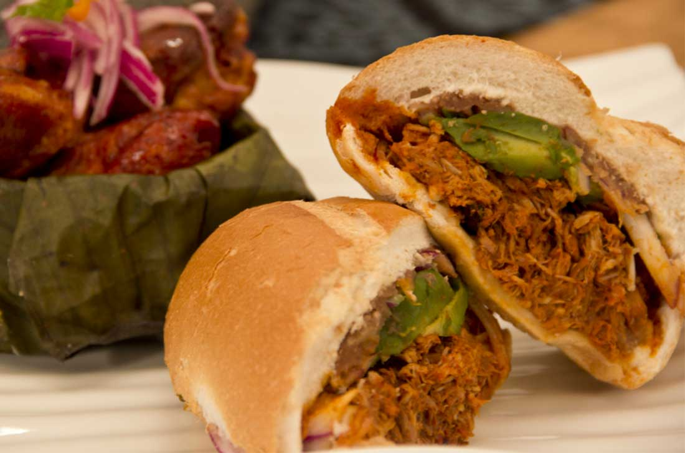

Torta de Cochinita Pibil
01 de Enero de 2019
Una de las mejores cosas en la vida es una buena comida, no he viajado mucho pero creeanme que la riqueza de la gastronomía de nuestro pais es tan grande que en algunos lugares podemos encontrarla, y hablo del centro del pais donde se mezclan y se unen las mejores recetas de todo el pais, por ello este día les traigo un delicioso platillo yucateco que se distingue por el sazón del achiote. Buen apetito chilaguillos¡¡
Ingredientes Para 4 personas
- 1 Hoja de Plátano
- 100 gr Pasta de Achiote
- 1 pizca Comino
- 3 Pimienta Negra
- 2 Pimientas gordas
- 1 diente Ajo
- 1 1/2 cucharada Vinagre blanco
- 2 tazas Jugo de Naranja agria
- 500 gr Carne de cerdo maciza
- 1 rama Orégano
- 3/4 taza Agua
- 1/2 Cebolla Morada , en juliana
- 1 Chile Habanero , finamente picado
- 1/4 taza Jugo de limón
- 1 pizca Orégano seco
- 12 Telera o Bolillos mini
- 1 Aguacate , en rebanadas
- Sal al gusto
PROCEDIMIENTO
Asa ligeramente la hoja de plátano sobre un comal y reserva.
Licúa el achiote con el comino, las pimientas, el ajo, el vinagre, el jugo de naranja y un poco de sal. Debes obtener una pasta homogénea.
Pincha la carne y vierte la salsa de achiote. Deja reposar en el refrigerador durante 40 minutos.
Cubre el fondo de una olla de presión con la hoja de plátano. Coloca la carne con la marinada y añade la rama de orégano.
Vierte el agua y tapa. Cocina a fuego medio y baja la flama cuando la válvula suba. Cuece durante 35 minutos.
Retira del fuego la olla de presión y deja enfriar. Saca la carne, deshebra y mezcla con el jugo de la cocción. Rectifica sazón.
Mezcla la cebolla morada con el chile habanero, el jugo de limón, el orégano y un poco de sal.
Abre por la mitad los panes y rellena con la cochinita pibil. Barniza con un poco de la salsa de achiote.
Sirve con la cebolla morada y una rebanada de aguacate. Empanizar sin harina, huevo y pan
Rita76@22: Han de ser muy ricas, invitenme una.
JoseRra: Gracias por la receta, hace tiempo esperaba encontrarla
margara@32: Quiero ir a mexico a ver si son tan ricas como dicen
Juan: Deliciosas, espero poderlas hacer como se deben